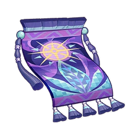

Natlan · Books & Literature
Kompore the Cunning
A three-part Natlan tapestry tells a dubious tale of Kompore and Sanhaj; later Archon Quest dialogue connects Sanhaj to Natlan’s historical heroes.

Three tapestries framed as fiction
Kompore the Cunning is a three-volume book collection sold at Idukan’s Trove in the Masters of the Night-Wind settlement. Each volume is described as a tapestry said to have been woven by Master Sanhaj Kompore. The item description warns that the stories are strange and generally considered works of fiction.
That frame matters because the final volume points toward a real Natlan hero named Sanhaj. The collection can preserve a fictionalized memory of that figure without making every event in the tale a verified historical record.
Volume I: a trickster seeks forbidden knowledge
The first volume introduces Kompore as a notorious rogue of the Masters of the Night-Wind, skilled at deception and theft, and contrasts him with his honest brother Sanhaj. Kompore becomes interested in the mushroom wine of the Lord of the Crossroads because dreams after drinking it are said to reveal a person’s fate.
The book describes this Lord as a guide for the dead and the master of a Night Realm, using both Papa Witch Doctor and Mama Dream-Realm as titles. Within Kompore’s thoughts, the hoped-for knowledge quickly becomes a way to gain influence and profit. These are claims inside the tapestry’s tale, not a separate guide to the Night Kingdom’s cosmology.
Volume II: the account questions itself
Kompore asks Sanhaj to help him deceive the Lord of the Crossroads: the younger brother is to request medicine while Kompore steals the mushroom wine. Sanhaj reluctantly agrees after he has already promised to keep his brother’s confidence.
The volume then interrupts its own plot to ask why Kompore would portray himself as a villain who betrays his brother and whether the account is true. It adds that, once Kompore became a tribal hero, few people dared to investigate. The narrator therefore flags a problem of testimony before the story reaches its darkest turn.
Volume III: murder, dream, and curse
The third volume says Sanhaj regrets the plan and confesses it in a dream. Mama Dream-Realm forgives him and gives him the wine, but Kompore anticipates the betrayal, enters his brother’s tent, and kills him before the warning can reach the Lord of the Crossroads.
The Lord grieves for Sanhaj and curses Kompore: his brother will live again within him, while the people he deceived or killed remain in his memory and Sanhaj repeats his lies. The book treats the wine as a boon entangled with guilt and punishment, but its account does not independently establish the curse or explain a reliable rule for how this power works.
The name and the later hero’s history
The tapestry says Kompore gains the new name Sanhaj Kompore and finds a way to redeem himself when Tenoch gathers heroes for a final stand against a dark torrent. In The Rainbow Destined to Burn, a spirit named Sanhaj appears before Ororon, calls himself a hero of the Masters of the Night-Wind, and identifies Ororon as the inheritor of his Ancient Name. Sanhaj also says that he sacrificed his life for Natlan.
The shared name, tribe, hero identity, and reference to Tenoch’s gathering strongly connect the book’s Sanhaj Kompore with the historical hero encountered in the Archon Quest. Reading the tapestries as a fictionalized account of that hero’s early life is an inference supported by those links; the quest does not confirm the brother’s murder or the specific events of the curse.
A title parallel is not a full cosmology
The tapestry gives its Lord of the Crossroads several names and describes a realm, a river of souls, and dream wine that reveals fate. Later Natlan material uses the title Lord of the Crossroads for the Lord of the Night, so the wording invites comparison. The book itself, however, does not name Yohualtecuhtin or establish that its brewery, river, and dream rules are literal geography of the present-day Night Kingdom.
Keep the layers distinct: the tapestry’s story and its unreliable framing, the later quest’s dialogue about Sanhaj and Ororon, and the wider lore of the Lord of the Night each have their own source and level of certainty. A shared title helps orient a comparison; it does not verify every detail in the folktale.
What the collection establishes
The collection establishes that Natlan preserves a three-part tapestry attributed to Sanhaj Kompore, with an in-story narrator who questions the truth of its version of Kompore’s past. Its final volume places Sanhaj’s later redemption alongside Tenoch’s gathering of heroes, and the Archon Quest supplies a strong historical counterpart in the hero who gives Ororon his Ancient Name.
Use the text as a deliberately strange, partly self-discrediting story that carries real names and historical echoes. The evidence supports a connection between the book’s Sanhaj and the later hero, but it does not turn every fantastical event into a confirmed biography.
This is an original CoreGG reading guide, not an official HoYoverse article or a reproduction of the game text. Source links below identify the records used so you can check the original context.
Sources & references
Check these sources for the original game text and reference trail.